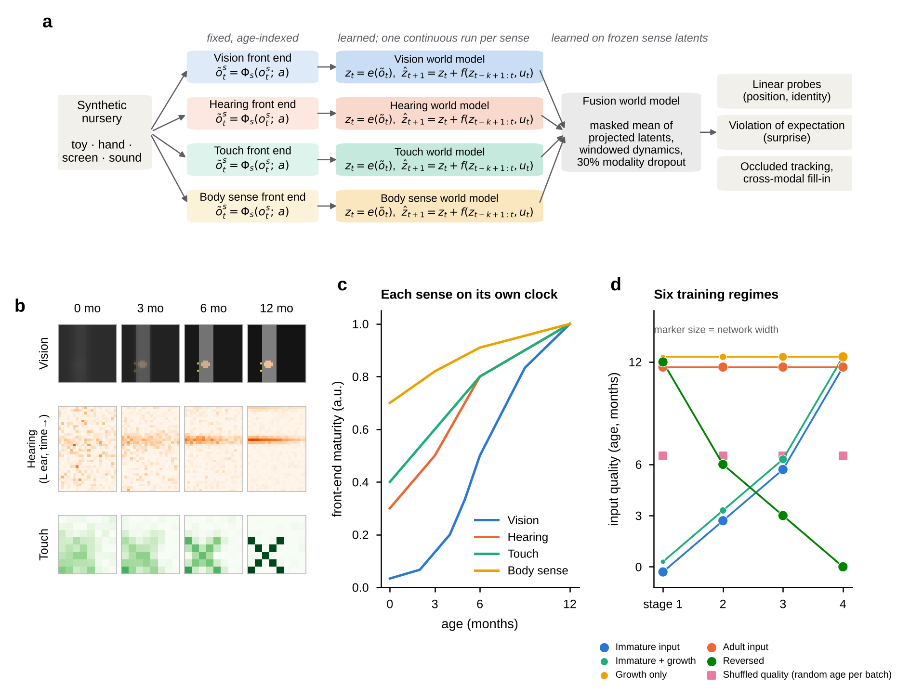

Study design
One page that states the question, the hypotheses, the system, the six training regimes and the evaluation protocol. Everything else in the wiki elaborates a part of this page.
Research question
Infants build a model of their world from experience that arrives once, in order, through senses that start immature and mature on different clocks. Whether these constraints matter for machine learning is usually assumed rather than tested. We treat developmental constraints as hypotheses to test rather than design choices to assume. Nothing in our models is gated by age: no module switches on at a given month, and every capability is measured.
The study asks four questions, each answered in one section of Results.
- Do senses mature in the infant order, and is that a property of learning or of the input?
- Does starting with immature input help?
- Do combined senses keep information that each sense loses?
- Do models that can decode a hidden object also expect it to persist?
Hypotheses and outcomes
The hypotheses were fixed in the research plan before the final results were produced. The table states each one and where the evidence stands.
| Hypothesis (research plan) | Outcome | Evidence |
|---|---|---|
| H1 trajectory. Probe accuracy rises with age, and the order in which senses become informative follows their maturation order (touch and proprioception, then hearing, then vision). | Partly. Probe accuracy rises with age and vision develops last in the learned curves, but that order is set by the front-end tables; the ceiling-based half-age measure does not recover the infant order (Kendall τ = 0.00). Learning lags the information available in the input. | Results: input schedule |
| H2 starting small helps robustness. Models given immature input are more robust to degraded input than adult-input models, at little or no cost on clean input. | Not established in vision (the cost on clean input, p = 0.06, and the robustness difference, p = 0.16, are both within seed variability). A borderline benefit on clean input in hearing (p = 0.05). | Results: costs and benefits |
| H3 memory gates permanence. A positive violation-of-expectation index appears once the memory window spans the occlusion. | Not supported: no unimodal vision model in any regime has a positive index. A squared-error forecaster is predicted to behave this way (Theory). | Results: decodable is not expected |
| H4 multisensory scaffolding. A fused model tracks an object through visual occlusion better than vision alone, because sound passes through occluders. | Supported for position tracking under occlusion (fused beats vision memory in 5 of 5 seeds). | Results: combined senses |
The plan also lists H5 to H7 (heterochrony in staged fusion, brain alignment, perceptual narrowing). They are not tested in the main experiments; perceptual narrowing is probed in a companion study (Results).
System

- Environment: a synthetic multisensory nursery with four streams; see Methods.
- Front ends: fixed, age-indexed operators per sense; see Methods and the interactive filters.
- World models: encoder, residual dynamics over a memory window, decoder; see Models.
- Fusion: a model over frozen sense latents with modality dropout; see Models.
Training regimes
Six regimes cross two levers, the input schedule and network growth, with two order controls. All regimes see the same episodes for the same number of updates.
| Regime | Network | Input quality across the four stages | Role |
|---|---|---|---|
| Immature input (primary) | fixed (12-month size) | 0 → 3 → 6 → 12 months | Isolates the input schedule |
| Immature input + growth | grows ×1 → ×4 | 0 → 3 → 6 → 12 | Adds function-preserving growth |
| Growth only | grows ×1 → ×4 | adult throughout | Isolates growth |
| Adult input | fixed | adult throughout | Standard baseline |
| Shuffled input quality | fixed | each batch from a random stage | Same variety, order removed |
| Reversed immaturity | fixed | 12 → 6 → 3 → 0 | Negative control for order |
Two further vision regimes, blur only and contrast only, follow the immature schedule for one part of the front end and test which part causes the early lag (Results). Every regime, including the order controls and the ablations, is trained with 5 seeds.
Evaluation protocol
- Train each sense model in one continuous run of four stages (2,000 updates per stage for vision, 1,500 for other senses; Adam, learning rate 2×10-3, batch 32). Weights carry over between stages.
- Read out at the end of each stage: these are the 0, 3, 6 and 12-month checkpoints. Probes are fitted on training episodes and evaluated on held-out test episodes (3,000 training and 400 test episodes per seed).
- Compare to the input ceiling: a supervised network trained directly on each age's filtered input estimates what the input contains.
- Test expectations with paired possible and impossible events that share random draws, using prediction error rather than probes.
- Fuse frozen latents of the grown regime and test occluded tracking and cross-sense fill-in.
- Report means and standard deviations over seeds, Hedges' g with approximate 95% intervals and Welch tests for the planned comparisons, without correction for multiple comparisons. Details: Methods: statistics.
Where to go next
- Models: architectures, parameter counts and the checkpoint list.
- Methods: environment, front ends, training, read-outs, statistics.
- Scope and limitations: what this design can and cannot support.
- Research plan and results log on GitHub.